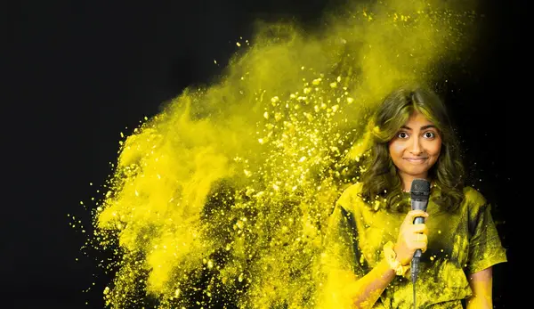
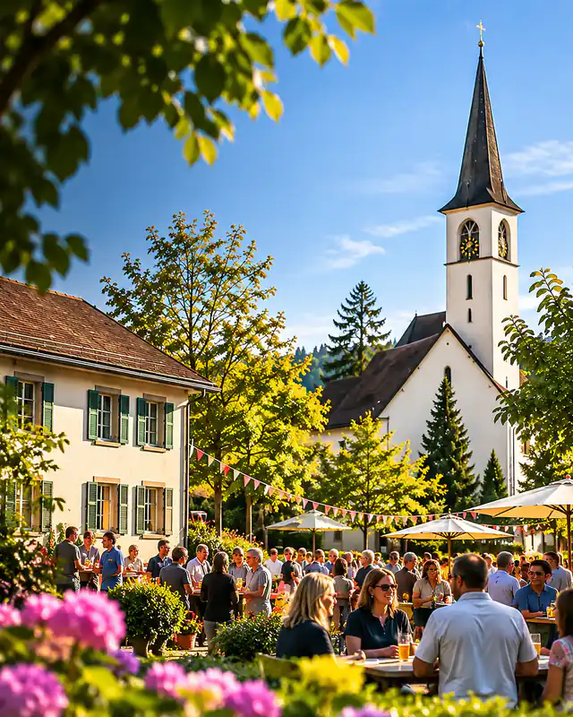
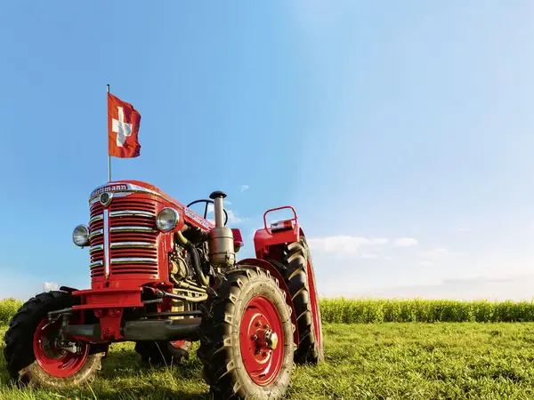
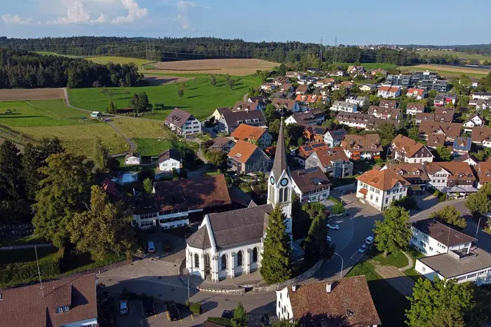
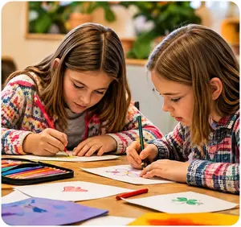

Comedy

Das Forum Lindau ist der Kulturverein
der Gemeinde Lindau und organisiert
kulturelle Anlässe, fördert das Vereinsleben
und schafft Begegnungen in unserer Gemeinde.


Das Forum Lindau ist der Kulturverein der Gemeinde Lindau. Wir setzen uns für ein lebendiges kulturelles Leben in unserer Gemeinde ein, unterstützen das Vereinsleben und schaffen Begegnungsmöglichkeiten für alle Generationen. Mit Konzerten, Lesungen, Ausstellungen, Führungen und weiteren Anlässen tragen wir zu einem aktiven und vielfältigen Gemeindeleben bei.
Mehr über uns
Mit Unterstützung der Gemeinde Lindau.
